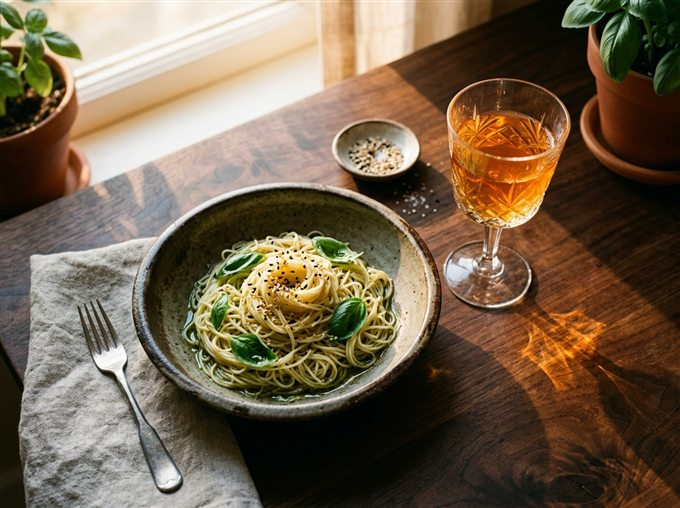
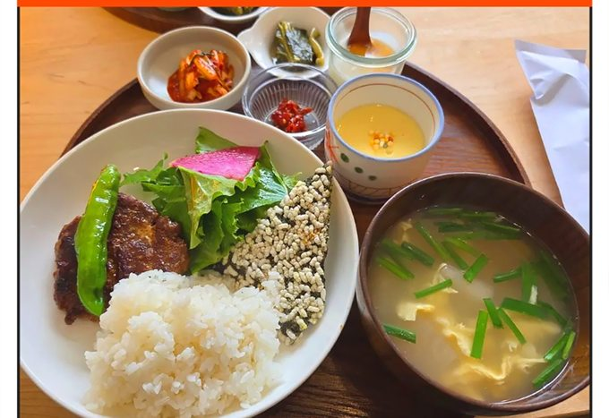

OCTOBER 2026SUNDAY18ONE DAY, ONE LOG.천천히 걸은 저녁이어폰을 빼니 바람 소리가 들렸다.평범해서 오래 기억하고 싶은 하루.다음에도 가끔은한 정거장 먼저 내려야지.
L2 / NOTES FROM THE TABLESAME TABLE.TWO MEMORIES.01 / THE DISH02 / THE SIP한 테이블, 두 장면.파스타 한 입, 와인 한 모금.오늘의 조합은 오래 기억할 것 같다.
A LITTLE ORDINARY / L2WELL FED.WELL SPENT.거창한 계획은 없었고든든한 한 끼면 충분했던 날.DINING / 4.5THE EVERYDAY COLLECTION잘 먹고, 잘 지낸 하루.익숙한 음식이 주는 편안함을 기록해두기.